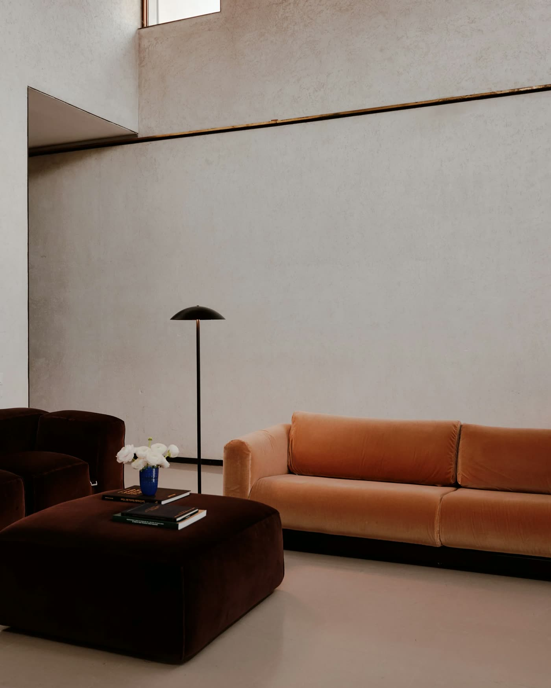
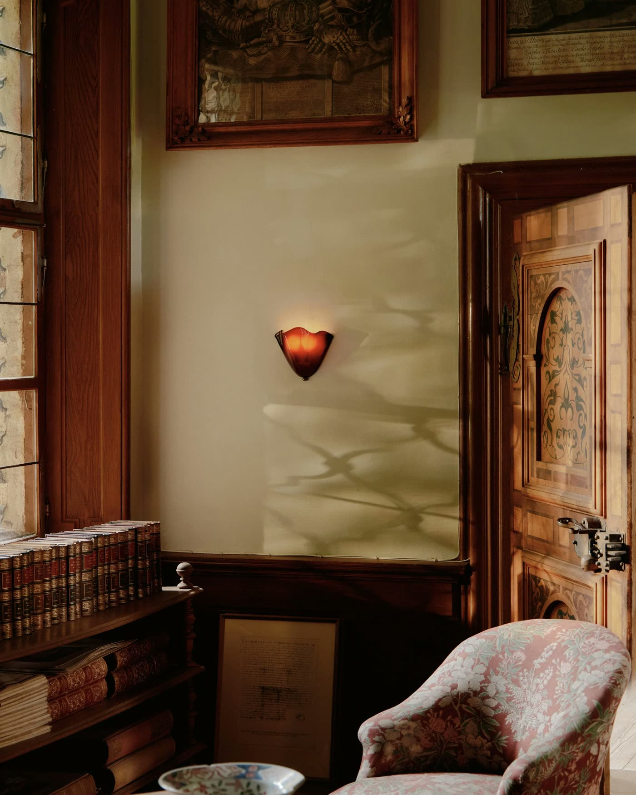
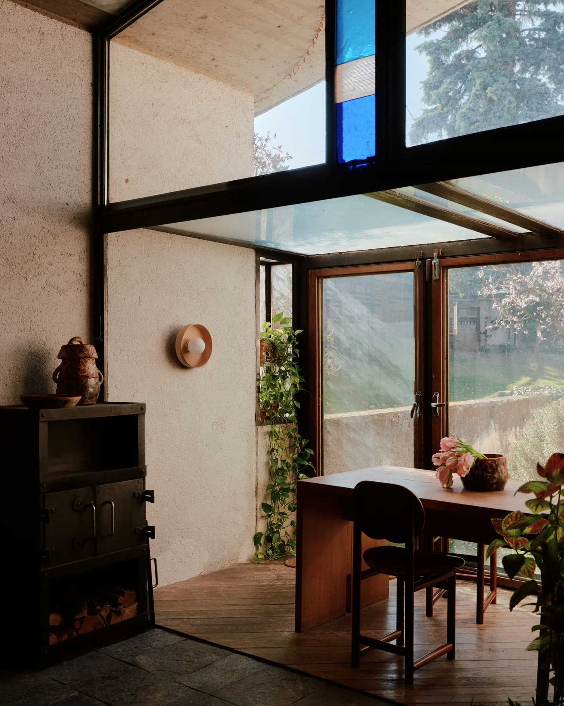

A private concept for Nick Ozemba and Felicia Hung
Change the glass and the finish
and see it in the room.
Glass color, metal finish and size is a lot of choice to carry in one photo. This sketch lets a client change all three live and see the fixture at scale, lit or unlit.

CONCEPT MODEL · NOT TO SCALE Drag to turn · pinch or scroll to zoomShow the combinations
Glass color, metal finish and size change live, instead of one photo per variation.
See it at scale
The fixture sits beside a sofa so clients see its real height.
Lit and unlit
Switching the light on shows how the glass glows, which photos rarely capture.
The real thing, from your own pictures
The model above is rough on purpose. From your drawings and photos, it would match your real fixture exactly.


Proof Sprint: one fixture, made interactive
We build a private, accurate 3D view of one fixture from your drawings and photos, ready to send to buyers or put on your site. $1,500 total, $750 to start.
Unofficial concept. The fixture here is a simplified procedural model drawn by Viewfully for illustration. Sizes and details are approximate and are not In Common With designs or a quote. Photos are shown only to illustrate this private concept and remain the property of In Common With (incommonwith.com). Nothing on this page is an offer or statement by In Common With.